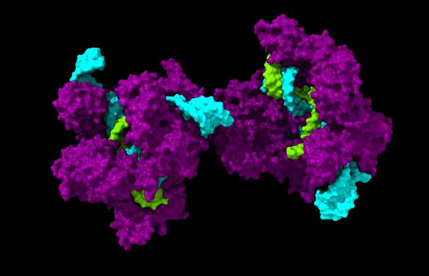

Proposta de Terapia Gênica para Tratamento de VLCAADD
Seção de imagens

Complexo Crispr/Cas9 com RNA Guia e DNA alvo, PDB 4OO8
VLCAD selvagem
VLCAD com destaque para as regiões das mutações estudadas, e região da mutação de interesse ampliada